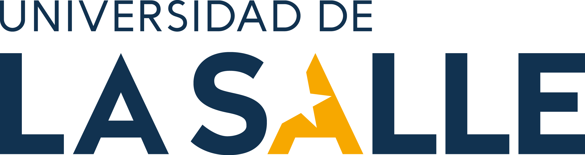

Construir una plataforma de visualización y análisis básico que transforme los datos IoT en decisiones ergonómicas accionables.
Dashboard interactivo multi-página con identidad institucional La Salle.
Estadísticas descriptivas, correlación y detección automática de eventos.
Argumentar técnicamente cada tecnología seleccionada en el stack.
Firmware: MicroPython 1.21 sobre ESP32 DevKit v1
Cálculo de ángulo: arctan2 sobre acelerómetro
Muestreo: 0.5 Hz (1 lectura cada 2 segundos)
| angulo_grados | float |
| presion_adc | int |
| ocupado | 0/1 |
| clasificacion_riesgo | str |
| indice_riesgo | 0/1 |
| tiempo_sentado | min |
| alerta_pausa | 0/1 |
ErgIoT_Bucket ·
Measurement: telemetria_ergonomica
tiempo_sentado y alerta_pausaLa correlación de 0.76 entre el ángulo medido y el índice de riesgo calculado en el ESP32 valida matemáticamente que la fórmula del firmware es coherente con los datos observados.
Insight clave detectado por el análisis: el 7 de mayo la postura correcta cayó al 67%, frente al 97% del 5 de mayo — el dashboard permite identificar este tipo de patrones automáticamente.
| Capa | Tecnología | Por qué |
|---|---|---|
| Almacenamiento | InfluxDB Cloud 2.x | Series temporales nativas, compresión, lenguaje Flux y free tier sin tarjeta. |
| Mensajería | MQTT (HiveMQ Cloud) | 80 bytes/msg vs 400 de HTTP — crítico para ESP32 con batería futura. |
| Visualización | Streamlit + Plotly | UI + análisis Python en un solo archivo. Cero JavaScript. |
| Identidad | Paleta La Salle | Azul marino #003057 + dorado #f2a900 extraídos del sitio oficial. |
1. El dashboard convierte 1440 puntos del sensor en respuestas a tres preguntas operativas: cómo estoy ahora, cuándo empeoro, qué intervenir primero.
2. La correlación de 0.76 entre ángulo y riesgo valida matemáticamente la fórmula implementada en el firmware del ESP32.
3. El stack IoT-Cloud-Streamlit es reproducible, de costo cero y reutilizable como plantilla para otros proyectos de telemetría.